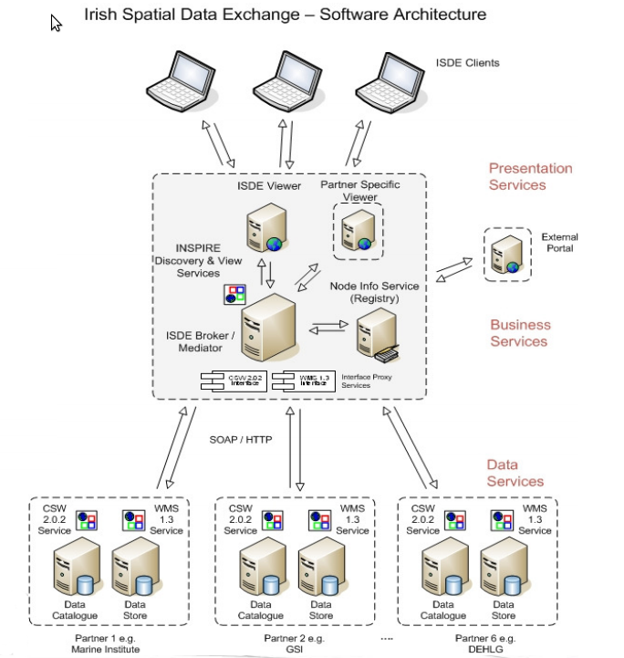
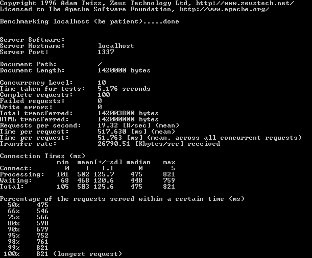

Node.js
When you do want to use it
- Near Real Time communication systems
- High End Single Page Applications
- Messaging Systems (We are here!)
- More...
Example Message System
Focus Area - Middleware

Problems
- Request Response Architecture (Wait for all messages)
- Verbose nature of data and definition (XML)
- Tooling support
- Focus on contracts not functionality
Some Numbers for XML World

Some Numbers for JSON
Where node helps in messaging systems.
- Evented Architecture (Fire Now!)
- The data is the definition (JSON)
- Better Polyglotability
- No longer fitting a problem to an architecture
Node.js
When you don't want to.
- Oisín Hurley / @oisin